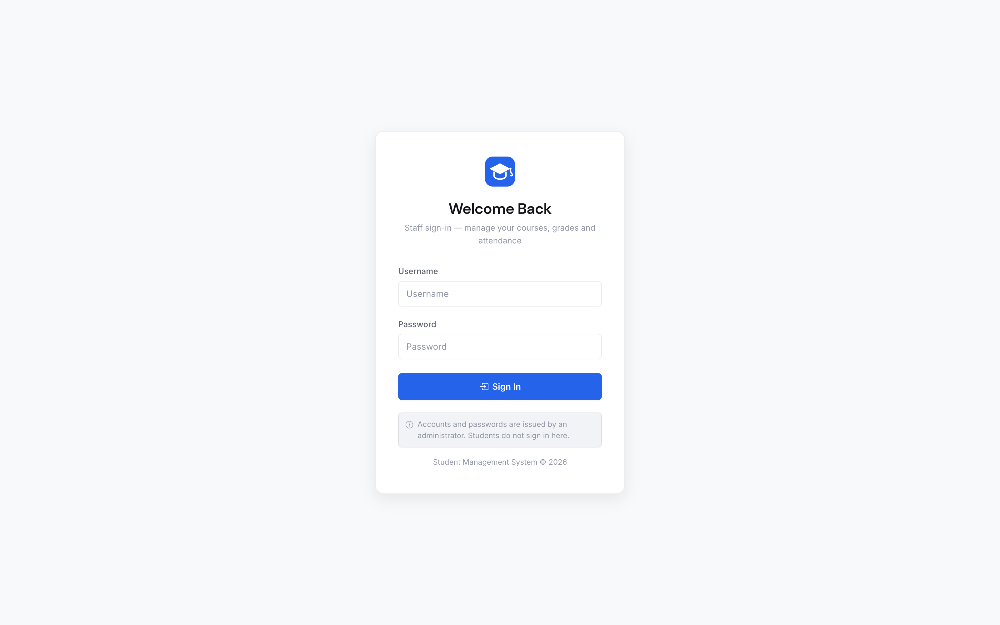
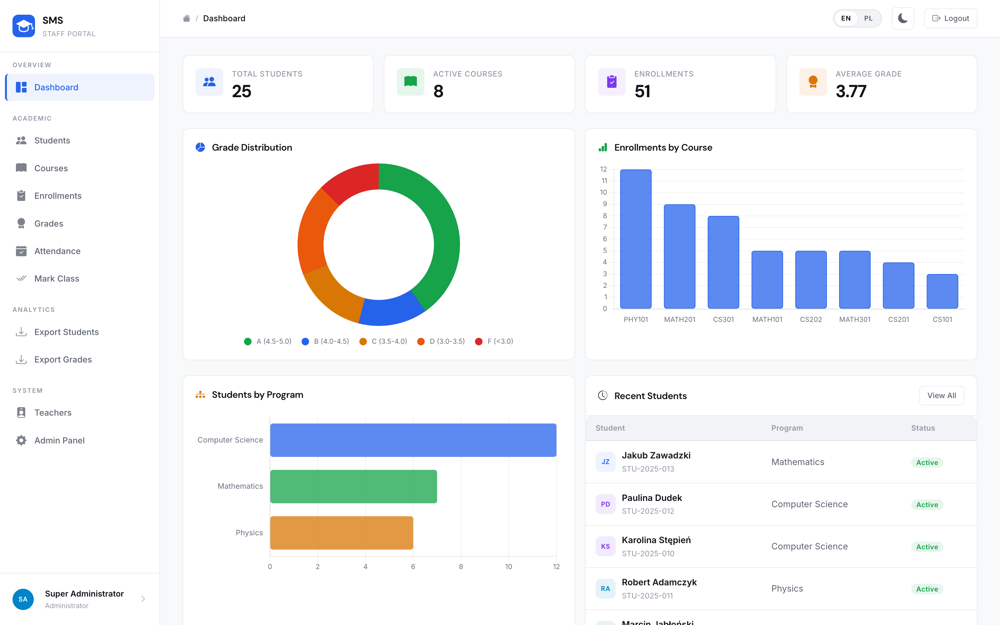
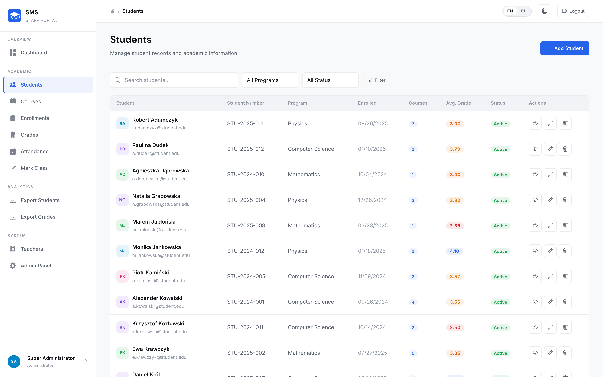
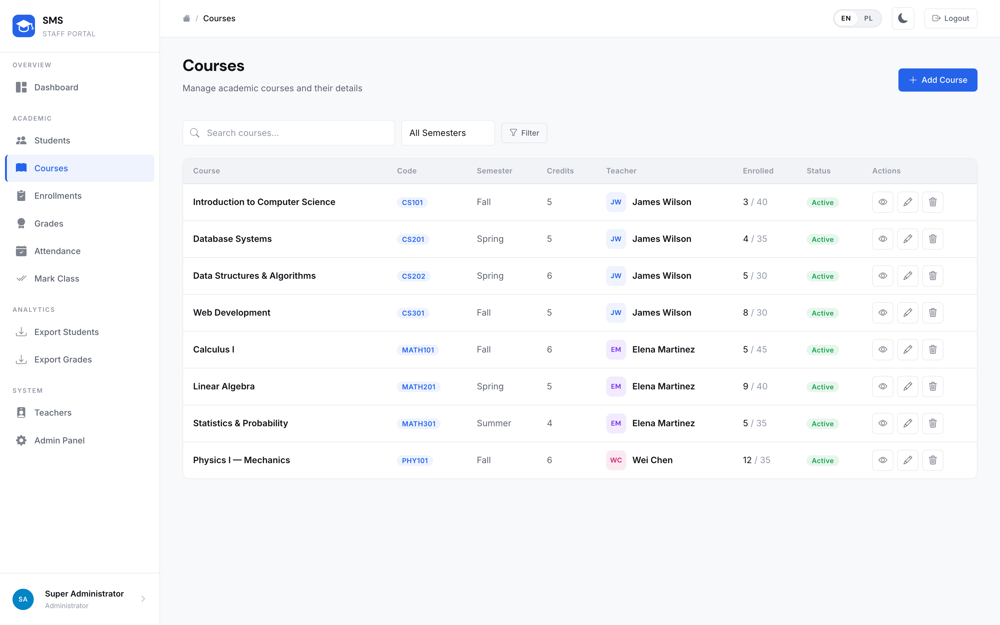
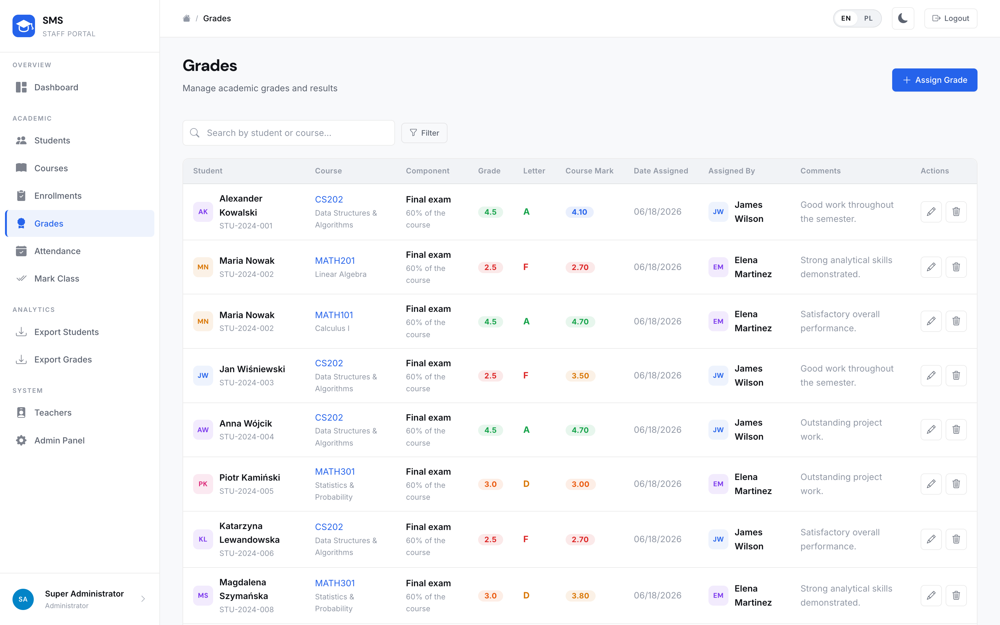
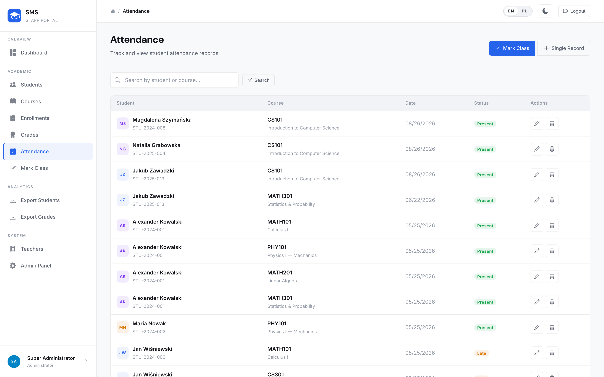
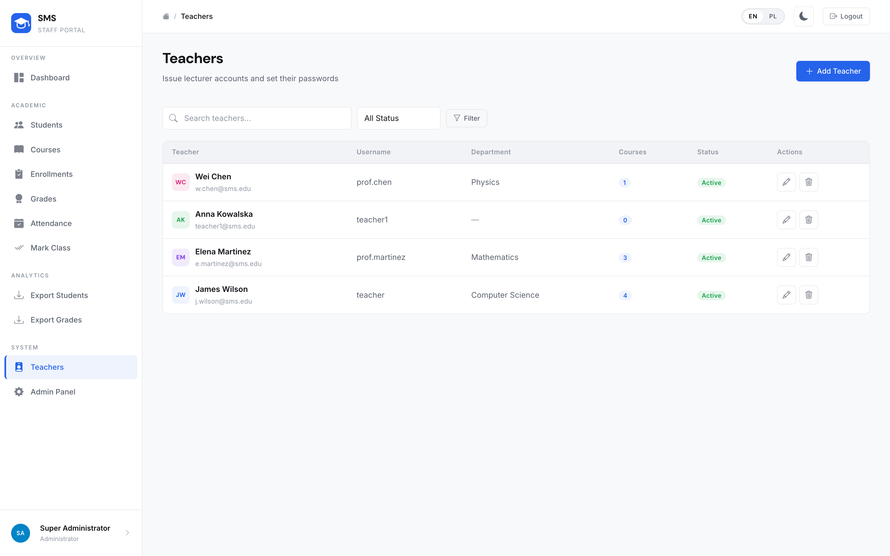
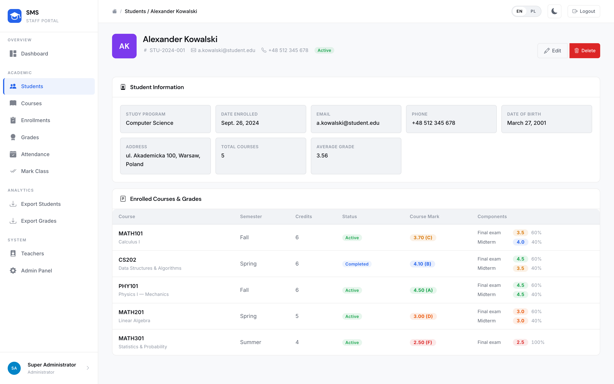

School of Computer Science & Technologies
Field of study: Computer Science
Maksym Shpak
Design and Implementation of a Web-Based Student Management System for Educational Institutions
Documentation for the diploma project
prepared under the direction of
Marcin Kacprowicz
Warsaw, 2026 r.
| Project name | Design and Implementation of a Web-Based Student Management System for Educational Institutions — Student Management System (SMS) |
| Purpose of the project | The project addresses a recurring problem in small and medium educational units: academic records for students, courses, grades and attendance are still often kept in spreadsheets or fragmented paper files. This leads to duplicated data, weak access control, and slow reporting for teachers and administrators. SMS centralises these processes in a single web application with role-based access (Administrator, Teacher), structured CRUD workflows, dashboard analytics, CSV export. Staff accounts are created by an administrator (there is no public registration). Students are records in the system, not user accounts. The system is implemented as a complete engineering deliverable — not only a conceptual design. |
| Brief description of the project | Student Management System is a full-stack Django web application that stores and manages academic data related to students, courses, enrolments, grades and attendance. Administrators maintain the institutional catalogue of students and courses; teachers manage grades and attendance for their own courses; students are academic records, not login accounts. The presentation layer uses Django templates with custom CSS and JavaScript; the application layer implements business rules and RBAC; the data layer uses a relational schema (SQLite locally, PostgreSQL in production via DATABASE_URL). The application is live at https://diploma-project-sms-management-system.onrender.com. |
| Competitor analysis | Microsoft Excel / Google Sheets: easy to start, but no relational integrity, no role-based permissions, and high risk of accidental edits. Moodle / Canvas: powerful LMS platforms with many modules, but heavy to deploy and operate for a small faculty office that only needs student-course-grade-attendance administration. Commercial university ERP suites: broad feature sets and high cost, often oversized for training centres or single departments. SMS differentiator: a lightweight, open academic engineering project focused on core administrative workflows, transparent Django architecture suitable for defence and further extension, zero proprietary licence fees, and explicit teacher-centred dashboards with JSON analytics API. |
| List of technologies used | Backend: Python 3.12, Django 6, Django Auth (session-based), Gunicorn, WhiteNoise, dj-database-url, PostgreSQL (production) / SQLite (development) Frontend: Django Templates, HTML5, CSS custom properties, vanilla JavaScript, Chart.js, Turbo, Bootstrap Icons, dashboard JSON endpoint (/api/dashboard/) Infrastructure: Render + Neon (build.sh: migrate + collectstatic + seed_demo), English/Polish i18n, HTTPS-oriented security settings when DEBUG=False, live at https://diploma-project-sms-management-system.onrender.com |
| Description of the technology stack and justification of selected technologies | The stack follows a classic three-tier architecture: Browser (HTML/CSS/JS) → Django views & forms (business logic, authentication, RBAC) → Relational database. Django was selected because it provides batteries-included authentication, CSRF protection, ORM migrations, and a dedicated Teachers screen for issuing lecturer accounts — essential for an academic records system delivered within an engineering diploma timeframe. Session authentication fits server-rendered pages better than JWT (no separate SPA). PostgreSQL is preferred in production for ACID transactions and concurrent multi-user access; SQLite keeps local development simple. WhiteNoise serves compressed static assets behind Gunicorn, which matches typical PaaS deployments without a separate Nginx container. There is no public registration: an administrator creates teacher accounts and issues credentials. The Teachers screen inside SMS is used to set a forgotten password, which matches a faculty-office workflow better than self-service email recovery. |
The custom User model extends AbstractUser with a role field (admin / teacher). View decorators enforce permissions: administrators manage all records; teachers see only students, grades and attendance related to their own courses. A guessed URL outside that scope returns 404. Students are not users — they have no login. This prevents privilege escalation while keeping URLs simple.
Code snippet (decorator, simplified):
def role_required(allowed_roles): def decorator(view_func): def wrapper(request, *args, **kwargs): if request.user.role not in allowed_roles: return redirect('dashboard') return view_func(request, *args, **kwargs) return wrapper return decorator
The schema comprises six core models: User, Student, Course, Enrollment, Grade, Attendance. Enrolment links students and courses (many-to-many with status). A Grade is one weighted component of an enrolment (coursework, midterm, final exam or retake); Enrollment.final_grade is their weighted mean on the 2.0–5.0 scale with letter mapping, and assigned_by records which teacher last saved the mark. Attendance is unique per (enrolment, date). Foreign keys and unique constraints protect referential integrity at the database level.
The HTML dashboard aggregates KPIs (students, courses, enrolments, average grade) and chart series (grade distribution, enrolments per course). Endpoint GET /api/dashboard/ returns the same metrics as JSON, scoped by role, so charts or future SPA clients can refresh data without reloading the page.
Example response fields:
{'role': 'teacher', 'total_students': …, 'grade_distribution': {'A': …}, 'course_labels': [...], 'course_data': [...]}
The application has no public registration. An administrator creates teacher accounts (username, role, initial password) on the Teachers screen inside SMS and issues those credentials out of band. Lecturers sign in with the issued username and password; students are data records, not users. If a teacher forgets a password, the administrator sets a new one on that same screen. This matches the real workflow of a faculty office and avoids an email-based recovery flow that would be unused without self-service sign-up.
Configuration is driven by environment variables: SECRET_KEY, DEBUG, ALLOWED_HOSTS, DATABASE_URL, DJANGO_ADMIN_PASSWORD. When DEBUG=False the application enforces HTTPS redirects, secure cookies, HSTS, and refuses insecure default SECRET_KEY values. DJANGO_ADMIN_PASSWORD replaces the published demo password on the admin account at deploy time, so that password is not left on the public internet. WhiteNoise serves hashed/compressed static files. This allows the same codebase to run locally on SQLite and on a hosted PostgreSQL instance without code changes. The public service is https://diploma-project-sms-management-system.onrender.com. A live demonstration uses the teacher account prof.martinez / demo1234; a second teacher, prof.chen / demo1234, shows that each lecturer sees only their own courses.
The interface is bilingual. Templates, model choices, flash messages and CSV headers go through Django i18n. The language switch keeps the current page and stores the choice in the session. The compiled Polish catalogue (django.mo) is committed so the deploy image does not depend on gettext. LocalizationTests guard that English and Polish pages actually differ.
The figures below are captures of the running Student Management System (local interface, English locale, light theme unless noted).








The primary goal — to design and implement a functional web-based Student Management System for educational administration — was achieved. The application covers authentication with RBAC, student and course administration, enrolments, weighted grade components, bulk attendance marking, a bilingual EN/PL interface, analytics dashboard, CSV export, and production-oriented configuration.
All core objectives were met:
Role-based access for Administrator and Teacher (students are records, not users)
Relational schema with integrity constraints for academic entities
CRUD workflows with form validation and flash messages
Weighted grade components, authorship audit, bulk class attendance
Dashboard KPIs and role-scoped REST endpoint /api/dashboard/
Bilingual interface (English / Polish, 308 translatable strings)
Staff accounts provisioned by an administrator (no public registration)
Automated test suite covering models, auth, API and CRUD
Deployment-ready settings (Gunicorn, WhiteNoise, Postgres via DATABASE_URL)
The project demonstrates that a production-capable academic administration system can be delivered by a single developer within an engineering diploma timeframe, using a coherent Django monolith suitable for oral examination and further maintenance.
Future development priorities:
Student portal — a third role with read-only access to own results
PDF report generation for transcripts and attendance sheets
Email notifications on new grades and absences
Documented REST API with token authentication for mobile clients
Two-factor login (TOTP) for administrator accounts
Timetabling with room and slot conflict detection
Official Documentation
[1] Django Software Foundation — Django Documentation — https://docs.djangoproject.com
[2] Django Software Foundation — Django Authentication System — https://docs.djangoproject.com/en/stable/topics/auth/
[3] Python Software Foundation — Python 3 Documentation — https://docs.python.org/3/
[4] The PostgreSQL Global Development Group — PostgreSQL Documentation — https://www.postgresql.org/docs/
[5] SQLite Consortium — SQLite Documentation — https://www.sqlite.org/docs.html
[6] Whitenoise — WhiteNoise Documentation — https://whitenoise.readthedocs.io
[7] Gunicorn — Gunicorn Documentation — https://docs.gunicorn.org
[8] Render — Deploy Django — https://render.com/docs/deploy-django
[9] MDN Web Docs — HTML / CSS / HTTP — https://developer.mozilla.org
[10] OWASP Foundation — OWASP Top Ten — https://owasp.org/www-project-top-ten/
[11] Jazzband — dj-database-url — https://github.com/jazzband/dj-database-url
[12] Bootstrap Icons — https://icons.getbootstrap.com
[13] Uniwersytet VIZJA / AEH — study programme materials for Computer Science (engineering profile)